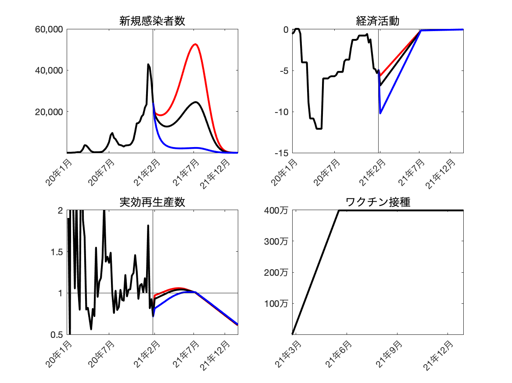
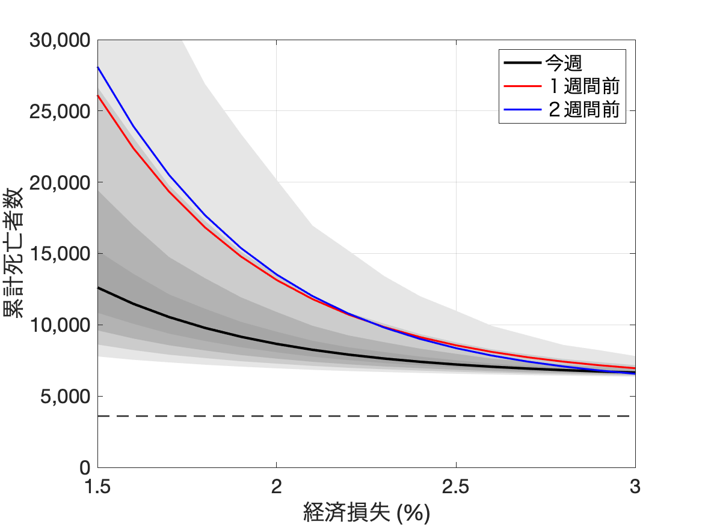
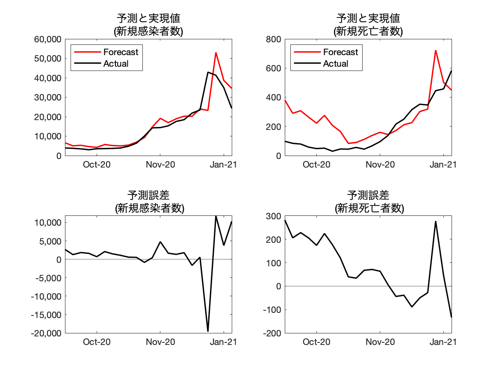

最終アップデート：2021年2月3日
図表の作成に用いたコードやデータファイルはここ.
1. Covid-19の感染状況の条件付き予測
|  |
出所: 著者達の計算による。
注1: “新規感染者数”: 1週間の新規感染者数。“経済活動”: 総生産量（参照レベルからの乖離）。“ワクチン接種”: ワクチンによる1週間の新規免疫獲得者。2本目の接種を受けた後に8割の確率で免疫が獲得できると仮定しています。その仮定では、ワクチンを週に400万本打つと週に160万人の人がワクチンによる免疫獲得をするという計算になります。詳しくは論文を参照して下さい。
注2: 赤線:1年平均総生産量ロスが1.35%。黒線:1年平均総生産量ロスが1.65%。青線:1年平均総生産量ロスが2.5%。
2. Covid-19とGDPの予測される関係
|  |
出所: 著者達の計算による。
注1: 縦軸は12か月後までに予測されるコロナ感染による総死亡者数、横軸はこれから12か月間の総生産量のリファレンスからの平均乖離。上のパネルでは、最も濃い、次に濃いグレイのエリアはそれぞれ20パーセント、40パーセントの信頼区間を示す。また、最も薄い、次に薄いグレイのエリアはそれぞれ80パーセント、60パーセントの信頼区間を示す。
注2: 黒線:直近の週。赤線:1週間前。青線:2週間前。
3. モデルの直近の予測精度
i. 1週間前に計算された現在までの予測
| 1週前の “条件付き”予測値 |
実現値 |
“条件付き” 予測誤差 |
|
|---|---|---|---|
| 新規陽性者数 | 34,281 | 24,238 | 10,043 |
| 新規死亡者数 | 449 | 637 | -190 |
出所: 著者達の計算による。
注1: (A)先週の時点でのモデルによる「1週先までの死亡者または陽性者の条件付き予測値」と(B)データの実現値の比較。詳細はFujii and Nakata (2021)を参照。
注2: モデルは総生産量を所与として新規感染者数・新規死亡者数を予測するが、総生産量そのものは予測しない。ここでは、実際の総生産量を知っていたという条件に基づいた予測（”条件付き予測”）と実現値を比較する。
4. 過去まで遡ったモデルの予測精度検証
i. 1週間前に計算された現在までの予測
|  |
出所: 著者達の計算による。
注1: それぞれの時点から1週先までの新規陽性者のモデルの条件付き予測値とデータの実現値。詳細についてはFujii and Nakata (2021)を参照。
注2: “3. モデルの直近の予測精度”の注２を参照。